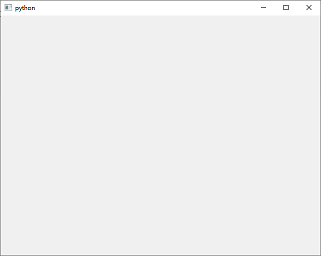
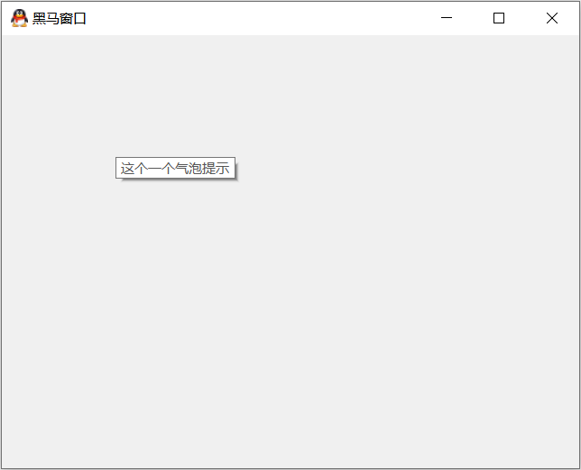

<!DOCTYPE lake>
<h2 data-lake-id="K7h6o" id="K7h6o"><span data-lake-id="u690e2264" id="u690e2264">1. 第一个PyQt窗口</span></h2><span class="yuque-card-unsupported">[codeblock]</span><p data-lake-id="u654d43db" id="u654d43db"><span data-lake-id="ud1e47ac8" id="ud1e47ac8">执行代码,就会显示PyQt窗口:</span></p><p data-lake-id="u4be1ffe4" id="u4be1ffe4"></p><h2 data-lake-id="zE6ms" id="zE6ms"><span data-lake-id="uc5133b26" id="uc5133b26">2. PyQt模块简介</span></h2><p data-lake-id="ud93cb34b" id="ud93cb34b"><span data-lake-id="u5e2c96f1" id="u5e2c96f1">PyQt中有非常多的功能模块，开发中最常用的功能模块主要有三个:</span></p><ul list="u00fe2886"><li data-lake-id="u0f6d36cb" fid="ucfe38e9a" id="u0f6d36cb"><strong><span data-lake-id="u48b4f207" id="u48b4f207">QtCore</span></strong><span data-lake-id="u82dabd14" id="u82dabd14">：包含了核心的非GUI的功能。主要和时间、文件与文件夹、各种数据、流、URLs、mime类文件、进程与线程一起使用</span></li><li data-lake-id="u6eca9b97" fid="ucfe38e9a" id="u6eca9b97"><strong><span data-lake-id="u1fb756f8" id="u1fb756f8">QtGui</span></strong><span data-lake-id="u91c389e4" id="u91c389e4">：包含了窗口系统、事件处理、2D图像、基本绘画、字体和文字类</span></li><li data-lake-id="u6316cb1e" fid="ucfe38e9a" id="u6316cb1e"><strong><span data-lake-id="u575c5a71" id="u575c5a71">QtWidgets</span></strong><span data-lake-id="u5a77c763" id="u5a77c763">：包含了一些列创建桌面应用的UI元素</span></li></ul><p data-lake-id="u281cf12c" id="u281cf12c"><br/></p><p data-lake-id="u1f811117" id="u1f811117"><strong><span data-lake-id="u3c1bfc6b" id="u3c1bfc6b">PyQt的其它模块</span></strong></p><blockquote data-lake-id="ufe1fd54c" id="ufe1fd54c"><ul list="u51f107cf"><li class="lake-lineheight-15" data-lake-id="u017f1500" fid="u8823ee9e" id="u017f1500"><span data-lake-id="u91992ec3" id="u91992ec3">QtMultimedia：负责处理多媒体的内容和调用摄像头</span></li><li data-lake-id="ua052d9e0" fid="u8823ee9e" id="ua052d9e0"><span data-lake-id="u7cd815c5" id="u7cd815c5">QtBluetooth：负责查找和连接蓝牙</span></li><li data-lake-id="u2d7a47ed" fid="u8823ee9e" id="u2d7a47ed"><span data-lake-id="uc518da4e" id="uc518da4e">QtNetwork：负责网络编程</span></li><li data-lake-id="u88bc9a98" fid="u8823ee9e" id="u88bc9a98"><span data-lake-id="u9b050229" id="u9b050229">QtPositioning：负责定位相关</span></li><li data-lake-id="ua2290f08" fid="u8823ee9e" id="ua2290f08"><span data-lake-id="u164222fd" id="u164222fd">Enginio：包含了通过客户端进入和管理Qt Cloud</span></li><li data-lake-id="ubb3164bc" fid="u8823ee9e" id="ubb3164bc"><span data-lake-id="u4083204f" id="u4083204f">QtWebSockets：实现了WebSocket协议</span></li><li data-lake-id="u94e11312" fid="u8823ee9e" id="u94e11312"><span data-lake-id="u9a80fe69" id="u9a80fe69">QtWebKit：包含了一个基WebKit2的web浏览器QtWebKitWidgets:包含了基于QtWidgets的WebKit1的类</span></li><li data-lake-id="ubaa21795" fid="u8823ee9e" id="ubaa21795"><span data-lake-id="u2bc45adb" id="u2bc45adb">QtXml：负责处理xm</span></li><li data-lake-id="u7ae5dd05" fid="u8823ee9e" id="u7ae5dd05"><span data-lake-id="u27840d05" id="u27840d05">QtSvg：负责显示SVG内容</span></li><li data-lake-id="u80cb281d" fid="u8823ee9e" id="u80cb281d"><span data-lake-id="u1e0c6b4b" id="u1e0c6b4b">QtSql：提供了处理数据库的工具。</span></li><li data-lake-id="u55257c12" fid="u8823ee9e" id="u55257c12"><span data-lake-id="ubceb580e" id="ubceb580e">QtTest：提供了测试PyQt5应用的工具</span></li></ul></blockquote><h2 data-lake-id="E2tj6" id="E2tj6"><span data-lake-id="u6fcfe294" id="u6fcfe294">3. 窗口标题和图标</span></h2><p data-lake-id="u182962c0" id="u182962c0"><span data-lake-id="u3290e08e" id="u3290e08e">应用程序图标是一个小的图像，通常在标题栏的左上角显示。</span></p><span class="yuque-card-unsupported">[codeblock]</span><p data-lake-id="ue8080724" id="ue8080724"><span data-lake-id="u82314c4a" id="u82314c4a">运行程序:</span></p><p data-lake-id="ub0e857dc" id="ub0e857dc"></p>